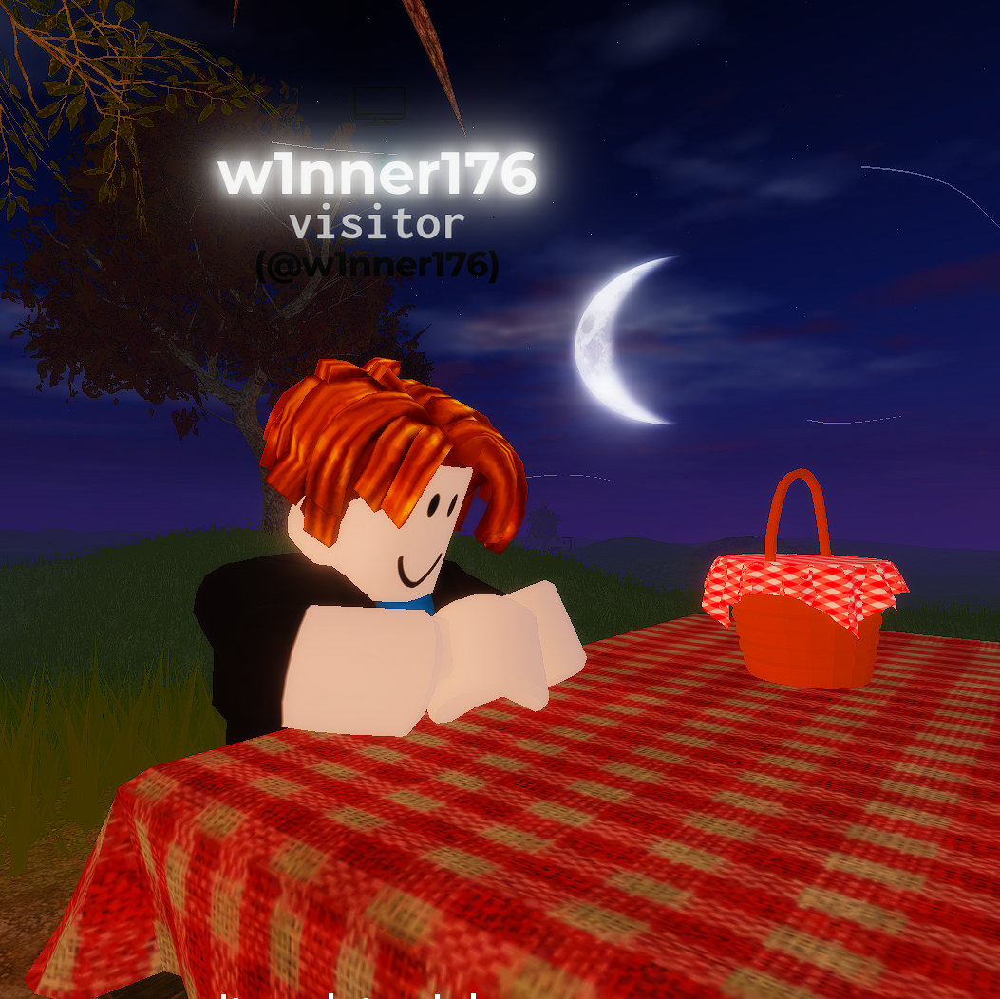
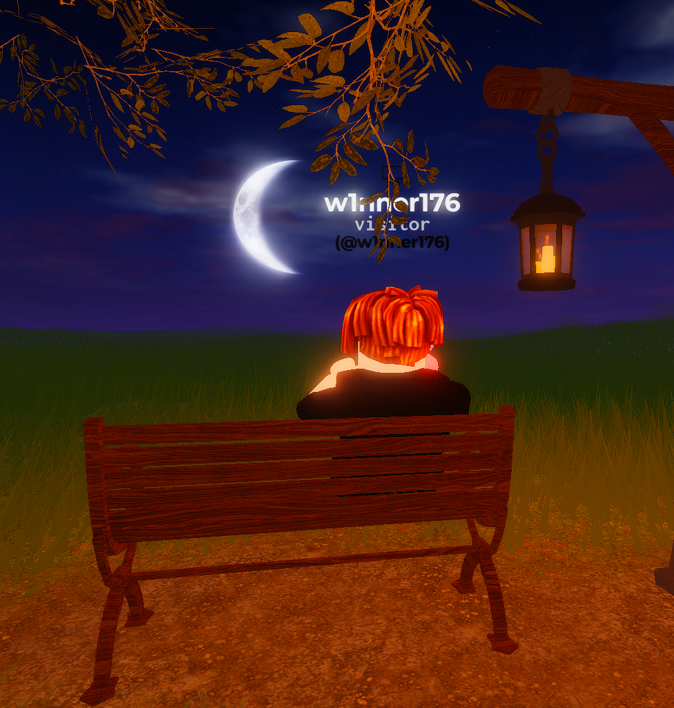
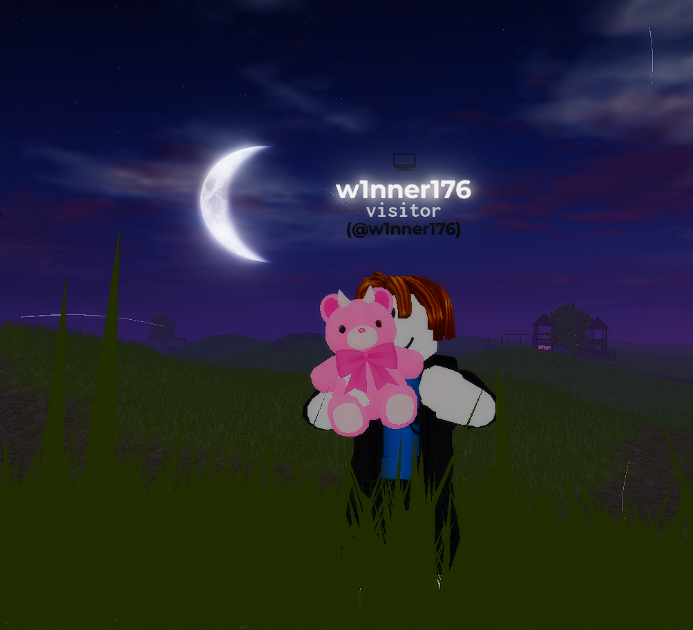
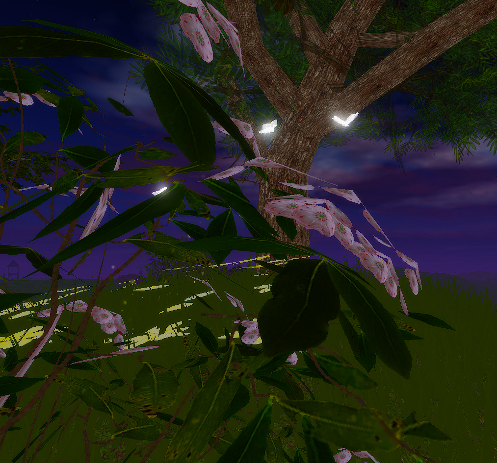
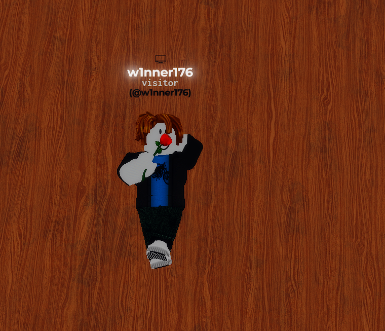
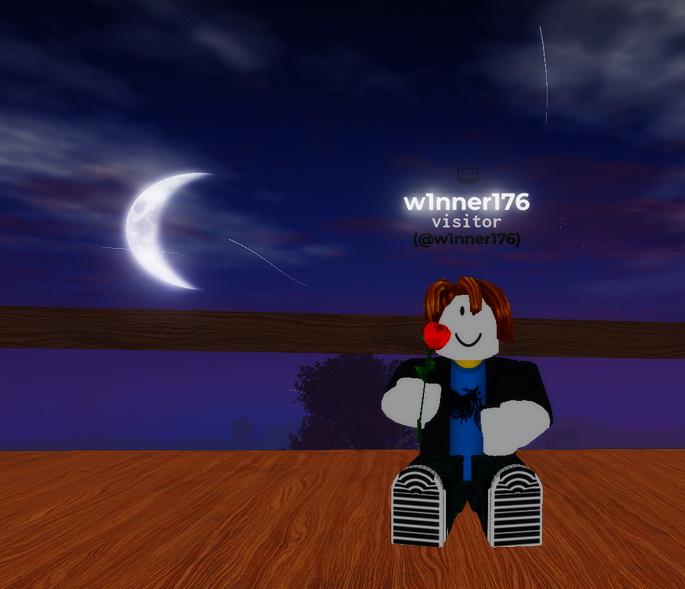

I knew you will press Yes. Now sit back, relax, read and smile pretty woman 💜
The following what you are going to read is about the reason why you should go out on dates with me. Read it with an open mind cutie

The pic you see on the left, is me always waiting for you to text back. I will keep trying my best to make sure this gorgeous woman keeps smiling,blushing, laughing and most importantly feel special about herself. Your texts always make me smile, and when they do not come, it feels like you got kidnapped. Even in my sleep, I always think about you. I know it might sound silly, but that is how much you matter to me.

Whenever I go out under the night sky and look at the moon ,I will just sit there, thinking about you. The night calm, but my mind always full of thoughts about you. The moon looks so pretty, but still… not as pretty as you, your eyes , your lips, your ears, your hair and everything about you. The way you smile, the way your eyes light up when you're happy — I think about those moments all the time. You're the kind of beautiful that stays in my mind, even when I close my eyes. I will always want you beside me, sitting next to me on that bench and just look at the moon together, even tho your eyes would always be my best view.
I would sit under the moon every night and compose the most beautiful song — just for you. Every key would tell a story about how much you mean to me. The soft notes would speak of your smile, the higher ones of your laughter, and the deepest notes would carry the quiet moments where I simply miss you. You are my favorite melody, the one I could play forever without getting tired. Even if the world went quiet, I do still hear the sound of you in my heart and your picture in my mind — always.

If I could ( I will ), I’d give you every cute plushie in the world — just to see you smile. I'd pick the softest, fluffiest onesso you’d always have something to hug when I’m not around. And not just teddy bears… I’d give you everything that makes your heart feel warm and happy. Because your smile means everything to me. When you’re happy, the whole world feels brighter. And if a little teddy can bring even a tiny smile to your face, then I’d carry a hundred of them — just for you.

Butterflies are beautiful — light, colorful, and full of life. But when I think of beauty, I would still think of you first.Every time you talk to me, my stomach fills with butterflies, just like in the movies. It's like a soft flutter inside me, reminding me how much you matter. You don’t even have to try — your voice, your laugh, your messages — they all make me feel like I’m floating. You’re not just someone special… you’re the magic in all my little moments.

When I lay down and close my eyes, it’s always you I think about. Your face, your smile, your words — they play on repeat in my mind like the windmill blades running 24/7. Whenever you compliment me, I can’t help but smile like a little kid… and sometimes, I even blush. You probably don’t realize it, but you have this quiet magic — the kind that makes ordinary moments feel special just because you’re in them. You’re beautiful in your own way, and that's what makes you unforgettable. Just thinking about you, your touch, your kiss, your voice makes everything feel better.

I sit here under the moon and honestly? The moon always considers itself to be lucky just to witness you everytime it comes out in the dark night stary sky.
Also if you date me , I will make sure to pamper you with handwritten letters, arm bites, hand holdings, icecreams and forhead kisses for no extra costs.
So miss gorgeous, will you like to be the pretty woman and I mean the pretty woman who is willing to go on a date with me ? I assure you an upgraded and loving experience